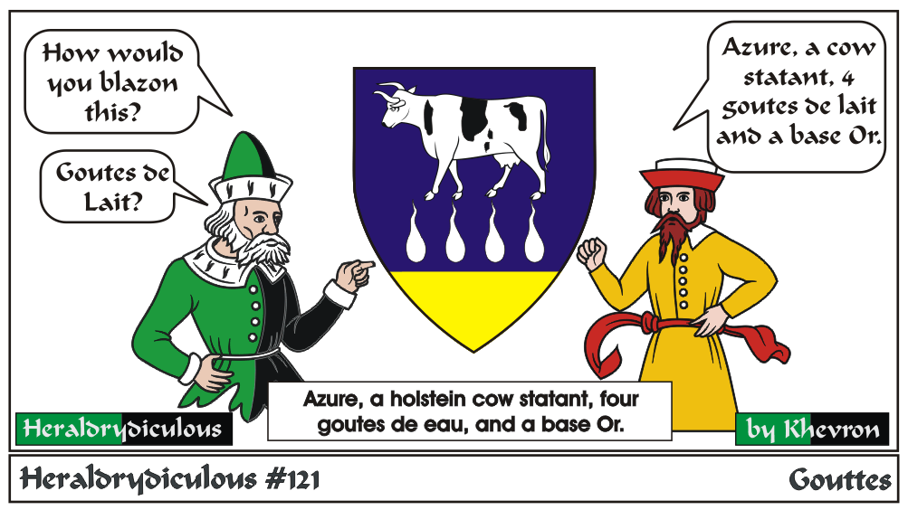
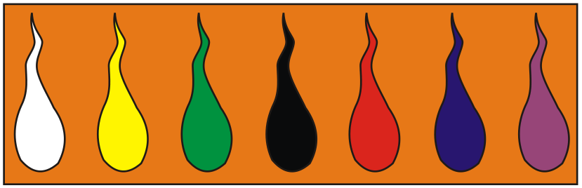

There are no "gouttes de Lait" or 'drops of milk" in heraldry. The white drops would be argent, which can be represented as Silver or White, and
as a gout would be called goutte de eau, or drops of Water.
Gouttes are specially named as follows:

Gouttes strewn on the field would be "Goutty".
There's a poem on the SCA Heralds Laurel Education page to use as a mnemonic:
A Heraldic Primer: Gouttes
e-mail: 
Back to Khevron's Heraldry Page